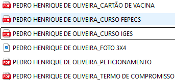

Envio da documentação
Orientações importantes!
Quando for enviar o e-mail, colocar no assunto seu nome completo e RGM.
Ao salvar o seu documento, ele precisa seguir o seguinte formato:

Cada documento precisa ser salvo seguindo o modelo acima. E ao enviar para o e-mail, colocar no assunto o seu nome completo e o RGM.
Sugerimos cuidado ao utilizar aplicativos de digitalização, pois alguns acabam deixando marcas d'água, o que pode interferir no processo de aceite da sua documentação. Por este motivo, sugerimos que utilize o Adobe Scan.